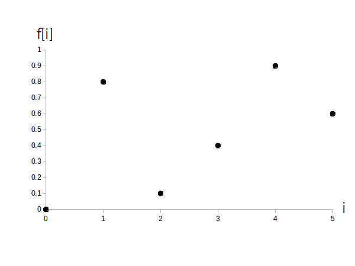
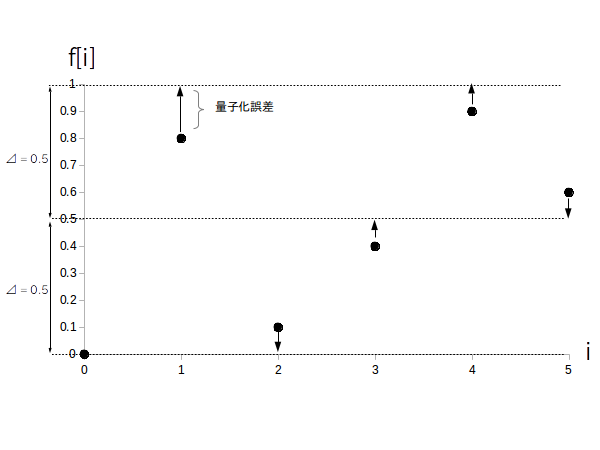
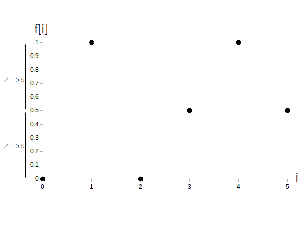

サンプリング直後のディジタル時間領域信号 $f[i]$ はアナログ値のままになりますが、コンピュータは円周率の様な無限少数を扱う事が出来ないので、$f[i]$ の値も離散化してディジタル値に変換する必要があります。
※ double 型や short 型の様な浮動小数点型の変数では無限少数を扱えません。途中で打ち切られます。
アナログ値の $f[i]$ を離散化してディジタル値にする処理を「量子化」と言います。
まず量子化に関する用語を挙げます。
・ 量子化・・ アナログ値のままの $f[i]$ を離散化してディジタル値に変換する処理
・ 量子化幅 $\Delta$ ・・・ 離散化の幅。単位は扱う信号の種類による(ボルトとかアンペアとか度とかetc.)
・ 線形量子化 ・・・ 量子化幅 $\Delta$ が可変でなく常に一定である量子化のこと
・ 非線形量子化 ・・・ 量子化幅 $\Delta$ が可変で状況によって変化する量子化のこと
・ 量子化誤差(または量子化雑音) ・・・ 元の $f[i]$ の値と量子化後の値 $f'[i]$ の差の絶対値 $|f[i]-f'[i]|$ のこと
なお、このアクティビティでは話を簡単にするため線形量子化のみ扱います。
線形量子化は以下のようにして行います。
ステップ 1： 量子化幅 $\Delta$ を決める
システム要件や制約などを元にして決定する。
大きくしても小さくしてもそれぞれメリット・デメリットがある。
ステップ 2： 量子化する
$f[i]$ のグラフに対して縦方向に $\Delta$ の間隔で補助線を引き、各 $f[i]$の値に一番近い補助線の値に変更する。
では具体例を示します。
図1は量子化前のディジタル信号$f[i]$です。

図 1 に対し、縦軸に量子化幅 $\Delta = 0.5$ の間隔で補助線を引いたのが図 2 です。
矢印は各 $f[i]$ から一番近い補助線を表します。
なお図 2 から分かるように、一般的に量子化後の各信号の値は元の値から変わります。
図 2 の矢印の長さが「量子化誤差」または「量子化雑音」になります。

図 3 が最終的に得られた量子化済みの $f[i]$ です。

この様にしてディジタル信号列 f[i] = {0, 1, 0, 0.5, 1, 0.5} が出来ました。